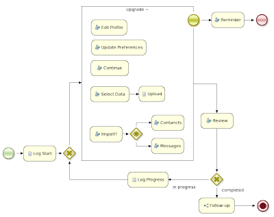

Unstructured, Ad-Hoc Processes
Traditional business processes are well structured, specifying how to execute the process from start to finish in an imperative way. But in more complex or dynamic environments, it might be more difficult to describe your process this way. It might be up to the end user to decide what to execute and in what order? Or what about exceptional cases? Unstructured or ad-hoc processes might be the solution.
Characteristics of such ad-hoc processes include:
- Some activities in the process might or might not need to be executed
- Some activities might be repeated more than once
- The order in which the activities need to be executed is not (always) described
- Not all activities are always connected, sometimes resulting in several process fragments
- The process (engine) does not (solely) decide what activities need to be executed, but this is rather decided by either:
- the end user that selects which tasks he wants to execute
- external events that might trigger certain tasks
- the available data related to that process instance that defines what to do next
For me, this all indicates that ad-hoc processes require the process engine to give up (a little bit of) control. The engine no longer describes the entire business logic as one interconnected flow chart, but rather relies on the input of end users (i.e. the expert or knowledge worker), rules (for inspecting data related to the case) or external events.
Note however that these processes are still very similar to traditional processes in many ways, as the user still expects the same logging, management and monitoring capabilities, etc.
For example, the following screenshot shows an ad-hoc process that allows users of some social networking site (like facebook) to upgrade to the latest version. Imagine this requires the user to migrate their profile, data, contacts, etc. to the new platform. An upgrade process would offer these possibilities to the end user, but the end user would decide what to perform during the upgrade (as he might not want to migrate all data for example). The order in which these tasks are performed is also up to the user. And some tasks might even be performed multiple times (like updating your preferences if you’re not yet happy).
(Click for larger image) 
Drools Flow allows you to describe semi-structured processes like this, using an ad-hoc sub-process. And because the Drools project has the unique feature of combining business processes with business rules and event processing, this allows you to combine the following possibilities at runtime:
- End users can decide what tasks to execute by signaling the engine
- Rules can automatically trigger certain tasks based on the data related to this case (see below for an example)
- Event processing rules can process low-level events and if necessary also trigger additional tasks
Processes and rules can really work hand in hand in this case. Rules can be associated with the ad-hoc sub-process to automatically trigger certain tasks when the sub-process is activated, or conditionally based on the available data. For example:
- Imagine that the preferences allow you to specify that you want to automatically synchronize your LinkedIn contacts as friends on this site. This could then be achieve adding a rule that automatically signals the Import task with the relevant data whenever this preference is selected.
- A rule could even be used to fully automate this whole upgrade process (updating the profile, preferences, data, etc. automatically) if the user has specified that he always wants to upgrade to the latest available version in his preferences.
And this is just one example. This approach could also be very useful in more data-based processes, like for example claim management. In this case, the tasks that need to be executed are largely dependent on the available case data. It might be more intuitive to model this as a number of independent process fragments (one for example to request additional information from the owner, one to delegate the claim to another person, etc.). Here, rules could again be really helpful to automatically derive the current state whenever the claim is updated.

{kind=link}